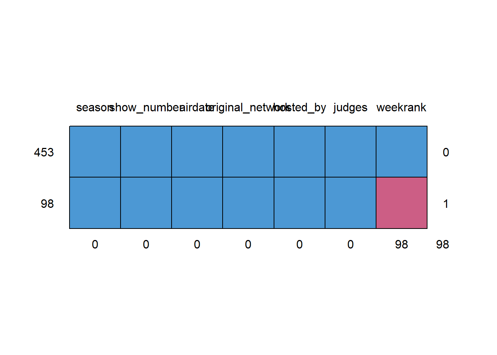
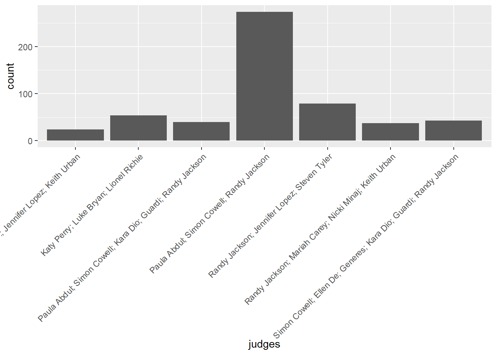
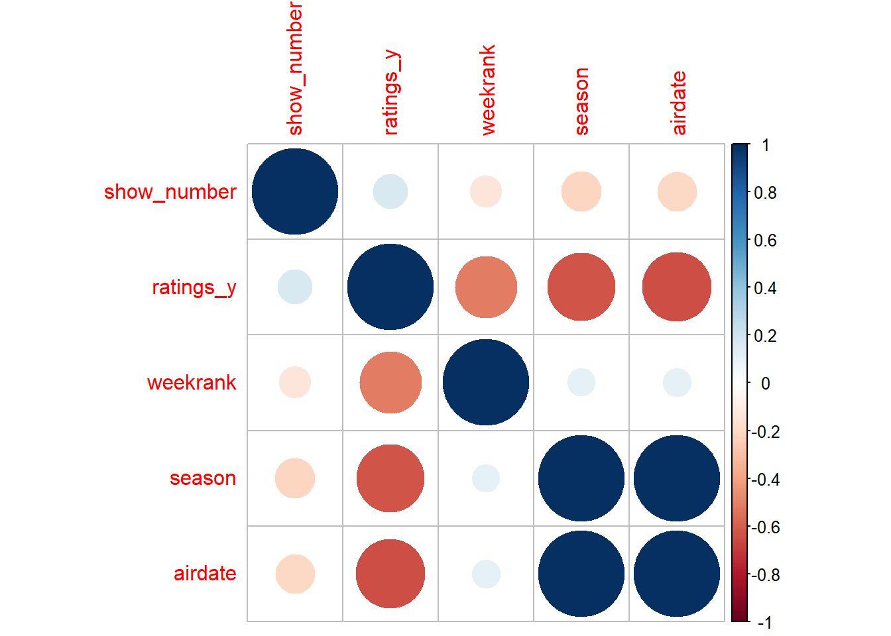
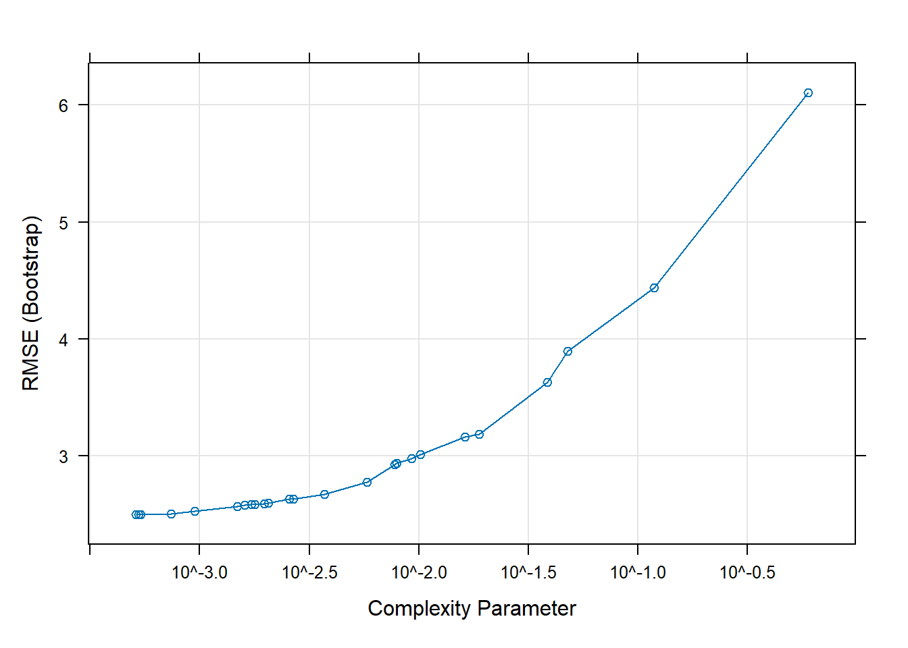
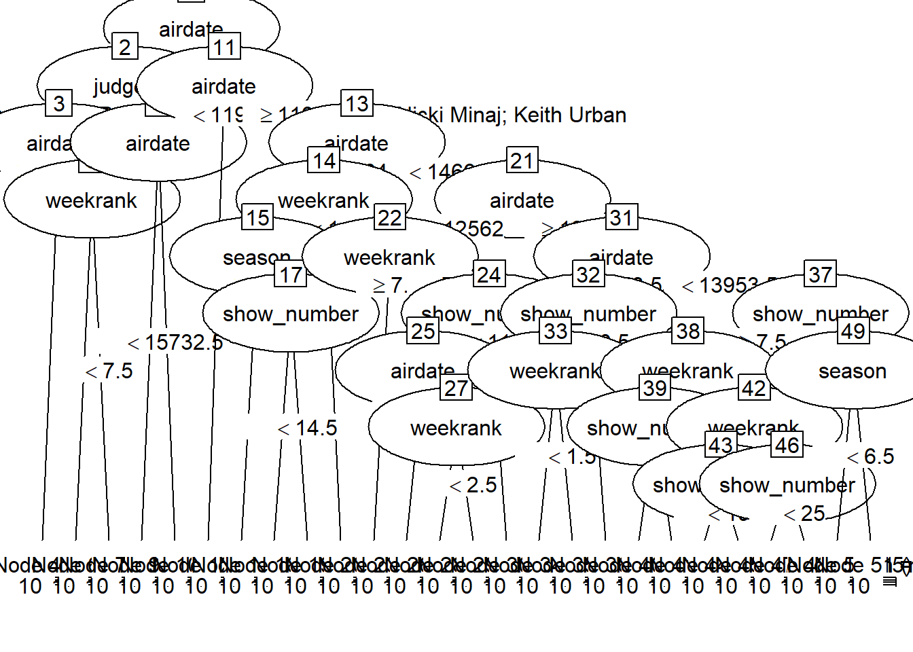
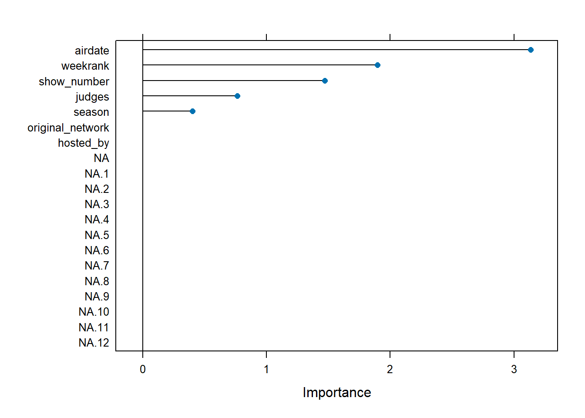
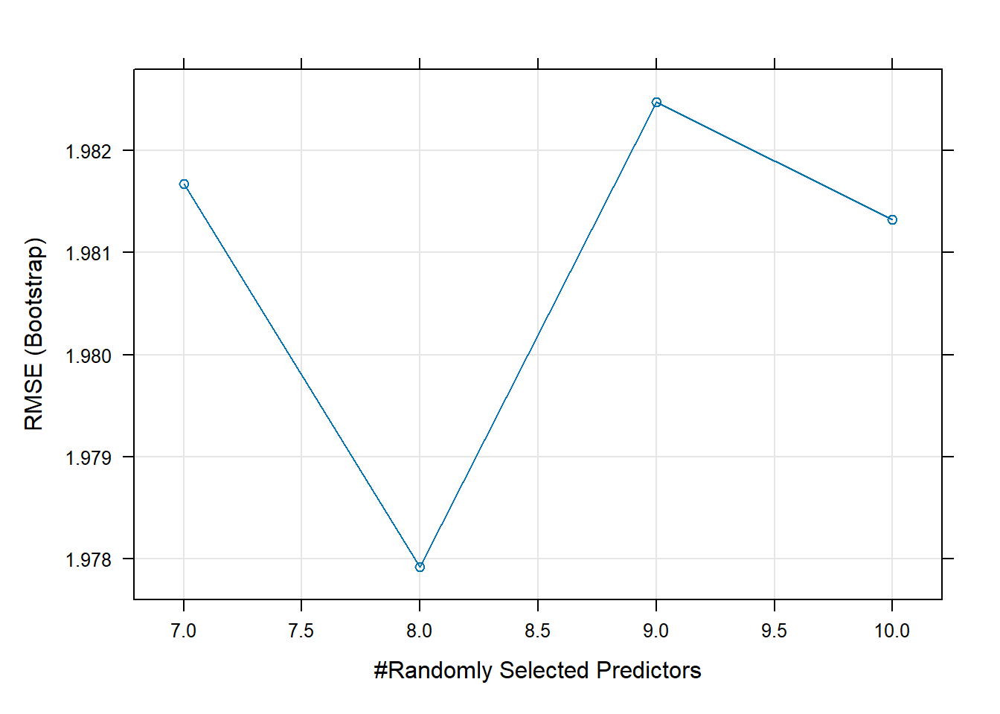
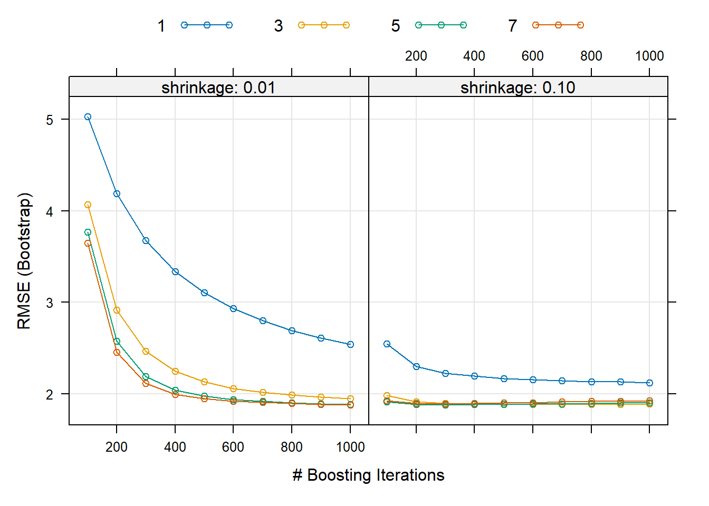

Rows: 142 Columns: 12
── Column specification ────────────────────────────────────────────────────────
Delimiter: ","
chr (6): audition_city, audition_venue, episodes, episode_air_date, callbac...
dbl (2): season, tickets_to_hollywood
date (4): audition_date_start, audition_date_end, callback_date_start, callb...
ℹ Use `spec()` to retrieve the full column specification for this data.
ℹ Specify the column types or set `show_col_types = FALSE` to quiet this message.
Rows: 456 Columns: 46
── Column specification ────────────────────────────────────────────────────────
Delimiter: ","
chr (44): place, gender, contestant, top_36, top_36_2, top_36_3, top_36_4, t...
dbl (1): season
lgl (1): comeback
ℹ Use `spec()` to retrieve the full column specification for this data.
ℹ Specify the column types or set `show_col_types = FALSE` to quiet this message.
Rows: 190 Columns: 6
── Column specification ────────────────────────────────────────────────────────
Delimiter: ","
chr (5): Contestant, Birthday, Birthplace, Hometown, Description
dbl (1): Season
ℹ Use `spec()` to retrieve the full column specification for this data.
ℹ Specify the column types or set `show_col_types = FALSE` to quiet this message.
Rows: 593 Columns: 17
── Column specification ────────────────────────────────────────────────────────
Delimiter: ","
chr (12): episode, airdate, 18_49_rating_share, timeslot_et, dvr_18_49, dvr_...
dbl (4): season, show_number, viewers_in_millions, nightlyrank
lgl (1): ref
ℹ Use `spec()` to retrieve the full column specification for this data.
ℹ Specify the column types or set `show_col_types = FALSE` to quiet this message.
Rows: 18 Columns: 10
── Column specification ────────────────────────────────────────────────────────
Delimiter: ","
chr (8): winner, runner_up, original_release, original_network, hosted_by, j...
dbl (2): season, no_of_episodes
ℹ Use `spec()` to retrieve the full column specification for this data.
ℹ Specify the column types or set `show_col_types = FALSE` to quiet this message.
Rows: 2429 Columns: 8
── Column specification ────────────────────────────────────────────────────────
Delimiter: ","
chr (7): season, week, contestant, song, artist, song_theme, result
dbl (1): order
ℹ Use `spec()` to retrieve the full column specification for this data.
ℹ Specify the column types or set `show_col_types = FALSE` to quiet this message.Tidy Tuesday Exercise
The data used in this exercise is collected on seasons 1-18 of American Idol. Some of the variables consist of the songs sang by contestants, audition locations and times, personal information about the contestants, and episode ratings. The data and data dictionaries can be found in the following Github repository.
https://github.com/kkakey/American_Idol/tree/main
Data Cleaning
First, we will take a glimpse at each data set to see what needs to be cleaned.
Auditions Data set
library(dplyr)
Attaching package: 'dplyr'The following objects are masked from 'package:stats':
filter, lagThe following objects are masked from 'package:base':
intersect, setdiff, setequal, uniondplyr::glimpse(auditions) #Need to convert episodes to numeric with NAs Rows: 142
Columns: 12
$ season <dbl> 1, 1, 1, 1, 1, 1, 1, 2, 2, 2, 2, 2, 2, 2, 3, 3, 3…
$ audition_date_start <date> 2002-04-20, 2002-04-23, 2002-04-26, 2002-04-29, …
$ audition_date_end <date> 2002-04-22, 2002-04-25, 2002-04-28, 2002-05-01, …
$ audition_city <chr> "Los Angeles, California", "Seattle, Washington",…
$ audition_venue <chr> "Westin Bonaventure Hotel", "Hyatt Regency Hotel"…
$ episodes <chr> NA, NA, NA, NA, NA, NA, NA, NA, NA, NA, NA, NA, N…
$ episode_air_date <chr> "11-Jun-02", "11-Jun-02", "11-Jun-02", "11-Jun-02…
$ callback_venue <chr> NA, NA, NA, NA, NA, NA, NA, "Atheneum Suites Hote…
$ callback_date_start <date> NA, NA, NA, NA, 2002-03-05, 2002-05-07, 2002-05-…
$ callback_date_end <date> NA, NA, NA, NA, 2002-03-05, 2002-05-07, 2002-05-…
$ tickets_to_hollywood <dbl> 31, 10, 23, 25, 15, 11, 6, 22, 35, 46, 30, 20, 36…
$ guest_judge <chr> NA, NA, NA, NA, NA, NA, NA, NA, NA, NA, NA, NA, N…#Also need to convert air date to date instead of character
#May not be needed because of missing values however. colSums(is.na(auditions)) #Episodes, air_date, callback_venue, and gust_judge have significant number of missing values season audition_date_start audition_date_end
0 0 0
audition_city audition_venue episodes
0 0 126
episode_air_date callback_venue callback_date_start
42 43 13
callback_date_end tickets_to_hollywood guest_judge
13 48 133 Eliminations Data set
dplyr::glimpse(eliminations) Rows: 456
Columns: 46
$ season <dbl> 1, 1, 1, 1, 1, 1, 1, 1, 1, 1, 1, 1, 1, 1, 1, 1, 1, 1, 1, 1,…
$ place <chr> "1", "2", "3", "4", "5", "6", "7", "8", "9–10", "9–10", "11…
$ gender <chr> "Female", "Male", "Female", "Female", "Male", "Female", "Fe…
$ contestant <chr> "Kelly Clarkson", "Justin Guarini", "Nikki McKibbin", "Tamy…
$ top_36 <chr> NA, NA, NA, NA, NA, NA, NA, NA, NA, NA, NA, NA, NA, NA, NA,…
$ top_36_2 <chr> NA, NA, NA, NA, NA, NA, NA, NA, NA, NA, NA, NA, NA, NA, NA,…
$ top_36_3 <chr> NA, NA, NA, NA, NA, NA, NA, NA, NA, NA, NA, NA, NA, NA, NA,…
$ top_36_4 <chr> NA, NA, NA, NA, NA, NA, NA, NA, NA, NA, NA, NA, NA, NA, NA,…
$ top_32 <chr> NA, NA, NA, NA, NA, NA, NA, NA, NA, NA, NA, NA, NA, NA, NA,…
$ top_32_2 <chr> NA, NA, NA, NA, NA, NA, NA, NA, NA, NA, NA, NA, NA, NA, NA,…
$ top_32_3 <chr> NA, NA, NA, NA, NA, NA, NA, NA, NA, NA, NA, NA, NA, NA, NA,…
$ top_32_4 <chr> NA, NA, NA, NA, NA, NA, NA, NA, NA, NA, NA, NA, NA, NA, NA,…
$ top_30 <chr> "N/A", "N/A", "N/A", "Safe (1st)", "N/A", "N/A", "Safe (2nd…
$ top_30_2 <chr> "Safe (2nd)", "Safe (1st)", "N/A", "N/A", "N/A", "N/A", "N/…
$ top_30_3 <chr> "N/A", "N/A", "Safe (2nd)", "N/A", "Wild Card", "Safe (1st)…
$ top_25 <chr> NA, NA, NA, NA, NA, NA, NA, NA, NA, NA, NA, NA, NA, NA, NA,…
$ top_25_2 <chr> NA, NA, NA, NA, NA, NA, NA, NA, NA, NA, NA, NA, NA, NA, NA,…
$ top_25_3 <chr> NA, NA, NA, NA, NA, NA, NA, NA, NA, NA, NA, NA, NA, NA, NA,…
$ top_24 <chr> NA, NA, NA, NA, NA, NA, NA, NA, NA, NA, NA, NA, NA, NA, NA,…
$ top_24_2 <chr> NA, NA, NA, NA, NA, NA, NA, NA, NA, NA, NA, NA, NA, NA, NA,…
$ top_24_3 <chr> NA, NA, NA, NA, NA, NA, NA, NA, NA, NA, NA, NA, NA, NA, NA,…
$ top_20 <chr> NA, NA, NA, NA, NA, NA, NA, NA, NA, NA, NA, NA, NA, NA, NA,…
$ top_20_2 <chr> NA, NA, NA, NA, NA, NA, NA, NA, NA, NA, NA, NA, NA, NA, NA,…
$ top_16 <chr> NA, NA, NA, NA, NA, NA, NA, NA, NA, NA, NA, NA, NA, NA, NA,…
$ top_14 <chr> NA, NA, NA, NA, NA, NA, NA, NA, NA, NA, NA, NA, NA, NA, NA,…
$ top_13 <chr> NA, NA, NA, NA, NA, NA, NA, NA, NA, NA, NA, NA, NA, NA, NA,…
$ top_12 <chr> NA, NA, NA, NA, NA, NA, NA, NA, NA, NA, NA, NA, NA, NA, NA,…
$ top_11 <chr> NA, NA, NA, NA, NA, NA, NA, NA, NA, NA, NA, NA, NA, NA, NA,…
$ top_11_2 <chr> NA, NA, NA, NA, NA, NA, NA, NA, NA, NA, NA, NA, NA, NA, NA,…
$ wildcard <chr> "N/A", "N/A", "N/A", "N/A", "Saved", "N/A", "N/A", "N/A", "…
$ comeback <lgl> NA, NA, NA, NA, NA, NA, NA, NA, NA, NA, NA, NA, NA, NA, NA,…
$ top_10 <chr> "Safe", "Safe", "Bottom Three", "Safe", "Safe", "Safe", "Sa…
$ top_9 <chr> NA, NA, NA, NA, NA, NA, NA, NA, NA, NA, NA, NA, NA, NA, NA,…
$ top_9_2 <chr> NA, NA, NA, NA, NA, NA, NA, NA, NA, NA, NA, NA, NA, NA, NA,…
$ top_8 <chr> "Safe", "Safe", "Safe", "Safe", "Safe", "Bottom Three", "Bo…
$ top_8_2 <chr> NA, NA, NA, NA, NA, NA, NA, NA, NA, NA, NA, NA, NA, NA, NA,…
$ top_7 <chr> "Safe", "Bottom Two", "Bottom Three", "Safe", "Safe", "Safe…
$ top_7_2 <chr> NA, NA, NA, NA, NA, NA, NA, NA, NA, NA, NA, NA, NA, NA, NA,…
$ top_6 <chr> "Safe", "Safe", "Bottom Three", "Safe", "Bottom Two", "Elim…
$ top_6_2 <chr> NA, NA, NA, NA, NA, NA, NA, NA, NA, NA, NA, NA, NA, NA, NA,…
$ top_5 <chr> "Safe", "Safe", "Bottom Two", "Safe", "Eliminated", NA, NA,…
$ top_5_2 <chr> NA, NA, NA, NA, NA, NA, NA, NA, NA, NA, NA, NA, NA, NA, NA,…
$ top_4 <chr> "Safe", "Safe", "Bottom Two", "Eliminated", NA, NA, NA, NA,…
$ top_4_2 <chr> NA, NA, NA, NA, NA, NA, NA, NA, NA, NA, NA, NA, NA, NA, NA,…
$ top_3 <chr> "Safe", "Safe", "Eliminated", NA, NA, NA, NA, NA, NA, NA, N…
$ finale <chr> "Winner", "Runner-Up", NA, NA, NA, NA, NA, NA, NA, NA, NA, …colSums(is.na(eliminations)) #Lot of missing values especially within the "top_" variables season place gender contestant top_36 top_36_2 top_36_3
0 1 1 1 384 394 404
top_36_4 top_32 top_32_2 top_32_3 top_32_4 top_30 top_30_2
435 424 427 433 436 426 431
top_30_3 top_25 top_25_2 top_25_3 top_24 top_24_2 top_24_3
436 431 436 440 240 278 360
top_20 top_20_2 top_16 top_14 top_13 top_12 top_11
376 424 440 428 404 335 312
top_11_2 wildcard comeback top_10 top_9 top_9_2 top_8
434 350 456 306 348 447 335
top_8_2 top_7 top_7_2 top_6 top_6_2 top_5 top_5_2
440 344 442 366 450 381 451
top_4 top_4_2 top_3 finale
396 452 411 417 Finalists Data set
dplyr::glimpse(finalists) #COnvert birthdate to date?Rows: 190
Columns: 6
$ Contestant <chr> "Kelly Clarkson", "Justin Guarini", "Nikki McKibbin", "Tam…
$ Birthday <chr> "24-Apr-82", "28-Oct-78", "28-Sep-78", "26-Jul-79", "17-Ma…
$ Birthplace <chr> "Fort Worth, Texas", "Columbus, Georgia", "Grand Prairie, …
$ Hometown <chr> "Burleson, Texas", "Doylestown, Pennsylvania", NA, "Atlant…
$ Description <chr> "She performed Aretha Franklin's version of \"Respectand V…
$ Season <dbl> 1, 1, 1, 1, 1, 1, 1, 1, 1, 1, 2, 2, 2, 2, 2, 2, 2, 2, 2, 2…colSums(is.na(finalists)) #Missing ~1/2 observations for hometown Contestant Birthday Birthplace Hometown Description Season
0 1 6 88 12 0 Ratings Data set
dplyr::glimpse(ratings) Rows: 593
Columns: 17
$ season <dbl> 1, 1, 1, 1, 1, 1, 1, 1, 1, 1, 1, 1, 1, 1, 1, 1…
$ show_number <dbl> 1, 2, 3, 4, 5, 6, 7, 8, 9, 10, 11, 12, 13, 14,…
$ episode <chr> "Auditions", "Hollywood Week", "Top 30: Group …
$ airdate <chr> "June 11, 2002", "June 12, 2002", "June 18, 20…
$ `18_49_rating_share` <chr> "4.8", "5.2", "5.2", "4.7", "4.5", "4.2", "5.3…
$ viewers_in_millions <dbl> 9.85, 11.24, 10.30, 9.47, 9.08, 8.53, 10.28, 7…
$ timeslot_et <chr> NA, NA, NA, NA, NA, NA, NA, NA, NA, NA, NA, NA…
$ dvr_18_49 <chr> NA, NA, NA, NA, NA, NA, NA, NA, NA, NA, NA, NA…
$ dvr_viewers_millions <chr> NA, NA, NA, NA, NA, NA, NA, NA, NA, NA, NA, NA…
$ total_18_49 <chr> NA, NA, NA, NA, NA, NA, NA, NA, NA, NA, NA, NA…
$ total_viewers_millions <chr> NA, NA, NA, NA, NA, NA, NA, NA, NA, NA, NA, NA…
$ weekrank <chr> "12", "6", "6", "22", "11", "17", "7", "26", "…
$ ref <lgl> NA, NA, NA, NA, NA, NA, NA, NA, NA, NA, NA, NA…
$ share <chr> NA, NA, NA, NA, NA, NA, NA, NA, NA, NA, NA, NA…
$ nightlyrank <dbl> NA, NA, NA, NA, NA, NA, NA, NA, NA, NA, NA, NA…
$ rating_share_households <chr> NA, NA, NA, NA, NA, NA, NA, NA, NA, NA, NA, NA…
$ rating_share <chr> "6.1 / 11", "6.9 / 12", "6.2 / 11", "5.8 / 10"…ratings$airdate = as.numeric(as.Date(ratings$airdate, format = "%B %d, %Y"))#Convert airdate to date to numeric
ratings$'18_49_rating_share' = as.numeric(ratings$'18_49_rating_share') #Convert rating_share to numeric and N/A values to NAWarning: NAs introduced by coercionratings$weekrank = as.numeric(ratings$weekrank) #Convert week rank to numericWarning: NAs introduced by coercioncolSums(is.na(ratings)) #Lot of missing values in columns "18_49_rating_share" through "rating_share" except viewers_in_millions season show_number episode
0 0 0
airdate 18_49_rating_share viewers_in_millions
39 396 3
timeslot_et dvr_18_49 dvr_viewers_millions
515 539 539
total_18_49 total_viewers_millions weekrank
539 539 104
ref share nightlyrank
593 449 569
rating_share_households rating_share
515 284 Seasons Data set
dplyr::glimpse(seasons) Rows: 18
Columns: 10
$ season <dbl> 1, 2, 3, 4, 5, 6, 7, 8, 9, 10, 11, 12, 13, 14, 15, 16…
$ winner <chr> "Kelly Clarkson", "Ruben Studdard", "Fantasia Barrino…
$ runner_up <chr> "Justin Guarini", "Clay Aiken", "Diana DeGarmo", "Bo …
$ original_release <chr> "June 11 (2002-06-11) –September 4, 2002 (2002-09-04)…
$ original_network <chr> "Fox", "Fox", "Fox", "Fox", "Fox", "Fox", "Fox", "Fox…
$ hosted_by <chr> "Ryan Seacrest; Brian Dunkleman", "Ryan Seacrest", "R…
$ judges <chr> "Paula Abdul; Simon Cowell; Randy Jackson", "Paula Ab…
$ no_of_episodes <dbl> NA, NA, NA, NA, NA, NA, NA, NA, NA, NA, NA, NA, NA, N…
$ finals_venue <chr> "Kodak Theatre", "Gibson Amphitheatre", "Kodak Theatr…
$ mentor <chr> NA, NA, NA, NA, NA, NA, NA, NA, NA, NA, NA, "Jimmy Io…seasons$original_network = as.factor(seasons$original_network) #Convert network to factor
seasons$hosted_by = as.factor(seasons$hosted_by) #Convert network to factor
seasons$judges = as.factor(seasons$judges) #Convert network to factorcolSums(is.na(seasons)) #Sig. NAs in # of episodes and mentor season winner runner_up original_release
0 0 0 0
original_network hosted_by judges no_of_episodes
0 0 0 14
finals_venue mentor
3 16 Songs Data set
dplyr::glimpse(songs) Rows: 2,429
Columns: 8
$ season <chr> "Season_01", "Season_01", "Season_01", "Season_01", "Season…
$ week <chr> "20020618_top_30_group_1", "20020618_top_30_group_1", "2002…
$ order <dbl> 1, 2, 3, 4, 5, 6, 7, 8, 9, 10, 1, 2, 3, 4, 5, 6, 7, 8, 9, 1…
$ contestant <chr> "Tamyra Gray", "Jim Verraros", "Adriel Herrera", "Rodesia E…
$ song <chr> "And I Am Telling You I'm Not Going", "When I Fall in Love"…
$ artist <chr> "Jennifer Holliday", "Doris Day", "Edwin McCain", "The Monk…
$ song_theme <chr> NA, NA, NA, NA, NA, NA, NA, NA, NA, NA, NA, NA, NA, NA, NA,…
$ result <chr> "Advanced (1st)", "Advanced (3rd)", "Eliminated", "Eliminat…colSums(is.na(songs)) #Lot of missing values in song_theme season week order contestant song artist song_theme
0 0 0 0 0 0 1656
result
30 Data Wrangling
For the purpose of this exercise, I am going to be interested in figuring out the variables that contribute to higher number of viewers (specifically, the viewers_in_millions from the ratings data set). To do this, I will begin assembling the variables from each data set that I am interested in seeing the effect on the rating.
glimpse(songs)Rows: 2,429
Columns: 8
$ season <chr> "Season_01", "Season_01", "Season_01", "Season_01", "Season…
$ week <chr> "20020618_top_30_group_1", "20020618_top_30_group_1", "2002…
$ order <dbl> 1, 2, 3, 4, 5, 6, 7, 8, 9, 10, 1, 2, 3, 4, 5, 6, 7, 8, 9, 1…
$ contestant <chr> "Tamyra Gray", "Jim Verraros", "Adriel Herrera", "Rodesia E…
$ song <chr> "And I Am Telling You I'm Not Going", "When I Fall in Love"…
$ artist <chr> "Jennifer Holliday", "Doris Day", "Edwin McCain", "The Monk…
$ song_theme <chr> NA, NA, NA, NA, NA, NA, NA, NA, NA, NA, NA, NA, NA, NA, NA,…
$ result <chr> "Advanced (1st)", "Advanced (3rd)", "Eliminated", "Eliminat…Below is the vector of ratings for each show of each season.
ratings_y = ratings$viewers_in_millions
sum(is.na(ratings_y)) #3 NA values [1] 3#auditions = select(auditions$season, auditions$) #Not needed
#eliminations = #Not needed
#finalists = #Not needed
ratings = select(ratings, season, show_number, airdate, weekrank)
seasons = select(seasons, season, original_network, hosted_by, judges)
#songs = #Not needed
ratings_X = left_join(ratings, seasons, by = "season")Remove NA values in responses variable and then the same observations in the descriptor variables data set.
# Identify rows with no NA values in data
rows_to_keep <- which(!is.na(ratings_y))
# Subset data sets based on rows_to_keep
ratings_X <- ratings_X[rows_to_keep, ]
ratings_y <- ratings_y[rows_to_keep]
anyNA(ratings_X)[1] TRUEcolSums(is.na(ratings_X)) #Get rid of NAs in airdate and impute weekrank averages season show_number airdate weekrank
0 0 39 102
original_network hosted_by judges
0 0 0 # Getting rid of missing values in airdate
rows_to_keep <- which(!is.na(ratings_X$airdate))
# Subset data sets based on rows_to_keep
ratings_X <- ratings_X[rows_to_keep, ]
ratings_y <- ratings_y[rows_to_keep]
#Impute averages into weekrank missing values
#https://www.r-bloggers.com/2015/10/imputing-missing-data-with-r-mice-package/#google_vignette
library(mice)Warning: package 'mice' was built under R version 4.4.1
Attaching package: 'mice'The following object is masked from 'package:stats':
filterThe following objects are masked from 'package:base':
cbind, rbindmd.pattern(ratings_X) #450 samples are complete, 98 miss only weekrank, etc
season show_number airdate original_network hosted_by judges weekrank
453 1 1 1 1 1 1 1 0
98 1 1 1 1 1 1 0 1
0 0 0 0 0 0 98 98tempData <- mice(ratings_X,m=5,maxit=50,meth='pmm',seed=500)
iter imp variable
1 1 weekrank
1 2 weekrank
1 3 weekrank
1 4 weekrank
1 5 weekrank
2 1 weekrank
2 2 weekrank
2 3 weekrank
2 4 weekrank
2 5 weekrank
3 1 weekrank
3 2 weekrank
3 3 weekrank
3 4 weekrank
3 5 weekrank
4 1 weekrank
4 2 weekrank
4 3 weekrank
4 4 weekrank
4 5 weekrank
5 1 weekrank
5 2 weekrank
5 3 weekrank
5 4 weekrank
5 5 weekrank
6 1 weekrank
6 2 weekrank
6 3 weekrank
6 4 weekrank
6 5 weekrank
7 1 weekrank
7 2 weekrank
7 3 weekrank
7 4 weekrank
7 5 weekrank
8 1 weekrank
8 2 weekrank
8 3 weekrank
8 4 weekrank
8 5 weekrank
9 1 weekrank
9 2 weekrank
9 3 weekrank
9 4 weekrank
9 5 weekrank
10 1 weekrank
10 2 weekrank
10 3 weekrank
10 4 weekrank
10 5 weekrank
11 1 weekrank
11 2 weekrank
11 3 weekrank
11 4 weekrank
11 5 weekrank
12 1 weekrank
12 2 weekrank
12 3 weekrank
12 4 weekrank
12 5 weekrank
13 1 weekrank
13 2 weekrank
13 3 weekrank
13 4 weekrank
13 5 weekrank
14 1 weekrank
14 2 weekrank
14 3 weekrank
14 4 weekrank
14 5 weekrank
15 1 weekrank
15 2 weekrank
15 3 weekrank
15 4 weekrank
15 5 weekrank
16 1 weekrank
16 2 weekrank
16 3 weekrank
16 4 weekrank
16 5 weekrank
17 1 weekrank
17 2 weekrank
17 3 weekrank
17 4 weekrank
17 5 weekrank
18 1 weekrank
18 2 weekrank
18 3 weekrank
18 4 weekrank
18 5 weekrank
19 1 weekrank
19 2 weekrank
19 3 weekrank
19 4 weekrank
19 5 weekrank
20 1 weekrank
20 2 weekrank
20 3 weekrank
20 4 weekrank
20 5 weekrank
21 1 weekrank
21 2 weekrank
21 3 weekrank
21 4 weekrank
21 5 weekrank
22 1 weekrank
22 2 weekrank
22 3 weekrank
22 4 weekrank
22 5 weekrank
23 1 weekrank
23 2 weekrank
23 3 weekrank
23 4 weekrank
23 5 weekrank
24 1 weekrank
24 2 weekrank
24 3 weekrank
24 4 weekrank
24 5 weekrank
25 1 weekrank
25 2 weekrank
25 3 weekrank
25 4 weekrank
25 5 weekrank
26 1 weekrank
26 2 weekrank
26 3 weekrank
26 4 weekrank
26 5 weekrank
27 1 weekrank
27 2 weekrank
27 3 weekrank
27 4 weekrank
27 5 weekrank
28 1 weekrank
28 2 weekrank
28 3 weekrank
28 4 weekrank
28 5 weekrank
29 1 weekrank
29 2 weekrank
29 3 weekrank
29 4 weekrank
29 5 weekrank
30 1 weekrank
30 2 weekrank
30 3 weekrank
30 4 weekrank
30 5 weekrank
31 1 weekrank
31 2 weekrank
31 3 weekrank
31 4 weekrank
31 5 weekrank
32 1 weekrank
32 2 weekrank
32 3 weekrank
32 4 weekrank
32 5 weekrank
33 1 weekrank
33 2 weekrank
33 3 weekrank
33 4 weekrank
33 5 weekrank
34 1 weekrank
34 2 weekrank
34 3 weekrank
34 4 weekrank
34 5 weekrank
35 1 weekrank
35 2 weekrank
35 3 weekrank
35 4 weekrank
35 5 weekrank
36 1 weekrank
36 2 weekrank
36 3 weekrank
36 4 weekrank
36 5 weekrank
37 1 weekrank
37 2 weekrank
37 3 weekrank
37 4 weekrank
37 5 weekrank
38 1 weekrank
38 2 weekrank
38 3 weekrank
38 4 weekrank
38 5 weekrank
39 1 weekrank
39 2 weekrank
39 3 weekrank
39 4 weekrank
39 5 weekrank
40 1 weekrank
40 2 weekrank
40 3 weekrank
40 4 weekrank
40 5 weekrank
41 1 weekrank
41 2 weekrank
41 3 weekrank
41 4 weekrank
41 5 weekrank
42 1 weekrank
42 2 weekrank
42 3 weekrank
42 4 weekrank
42 5 weekrank
43 1 weekrank
43 2 weekrank
43 3 weekrank
43 4 weekrank
43 5 weekrank
44 1 weekrank
44 2 weekrank
44 3 weekrank
44 4 weekrank
44 5 weekrank
45 1 weekrank
45 2 weekrank
45 3 weekrank
45 4 weekrank
45 5 weekrank
46 1 weekrank
46 2 weekrank
46 3 weekrank
46 4 weekrank
46 5 weekrank
47 1 weekrank
47 2 weekrank
47 3 weekrank
47 4 weekrank
47 5 weekrank
48 1 weekrank
48 2 weekrank
48 3 weekrank
48 4 weekrank
48 5 weekrank
49 1 weekrank
49 2 weekrank
49 3 weekrank
49 4 weekrank
49 5 weekrank
50 1 weekrank
50 2 weekrank
50 3 weekrank
50 4 weekrank
50 5 weekrankWarning: Number of logged events: 250summary(tempData)Class: mids
Number of multiple imputations: 5
Imputation methods:
season show_number airdate weekrank
"" "" "" "pmm"
original_network hosted_by judges
"" "" ""
PredictorMatrix:
season show_number airdate weekrank original_network hosted_by
season 0 1 1 1 1 1
show_number 1 0 1 1 1 1
airdate 1 1 0 1 1 1
weekrank 1 1 1 0 1 1
original_network 1 1 1 1 0 1
hosted_by 1 1 1 1 1 0
judges
season 1
show_number 1
airdate 1
weekrank 1
original_network 1
hosted_by 1
Number of logged events: 250
it im dep meth
1 1 1 weekrank pmm
2 1 2 weekrank pmm
3 1 3 weekrank pmm
4 1 4 weekrank pmm
5 1 5 weekrank pmm
6 2 1 weekrank pmm
out
1 season, original_networkFox, judgesHarry Connick Jr.Jennifer Lopez; Keith Urban, judgesKaty Perry; Luke Bryan; Lionel Richie, judgesSimon Cowell; Ellen De; Generes; Kara Dio; Guardi; Randy Jackson
2 season, original_networkFox, judgesHarry Connick Jr.Jennifer Lopez; Keith Urban, judgesKaty Perry; Luke Bryan; Lionel Richie, judgesSimon Cowell; Ellen De; Generes; Kara Dio; Guardi; Randy Jackson
3 season, original_networkFox, judgesHarry Connick Jr.Jennifer Lopez; Keith Urban, judgesKaty Perry; Luke Bryan; Lionel Richie, judgesSimon Cowell; Ellen De; Generes; Kara Dio; Guardi; Randy Jackson
4 season, original_networkFox, judgesHarry Connick Jr.Jennifer Lopez; Keith Urban, judgesKaty Perry; Luke Bryan; Lionel Richie, judgesSimon Cowell; Ellen De; Generes; Kara Dio; Guardi; Randy Jackson
5 season, original_networkFox, judgesHarry Connick Jr.Jennifer Lopez; Keith Urban, judgesKaty Perry; Luke Bryan; Lionel Richie, judgesSimon Cowell; Ellen De; Generes; Kara Dio; Guardi; Randy Jackson
6 season, original_networkFox, judgesHarry Connick Jr.Jennifer Lopez; Keith Urban, judgesKaty Perry; Luke Bryan; Lionel Richie, judgesSimon Cowell; Ellen De; Generes; Kara Dio; Guardi; Randy JacksoncompletedData = complete(tempData,1) #Cleaned data containing X variables
summary(completedData) season show_number airdate weekrank
Min. : 1.000 Min. : 1.00 Min. :11849 Min. : 1.000
1st Qu.: 4.000 1st Qu.: 9.00 1st Qu.:12889 1st Qu.: 2.000
Median : 8.000 Median :18.00 Median :14258 Median : 3.000
Mean : 7.991 Mean :19.13 Mean :14361 Mean : 3.918
3rd Qu.:11.000 3rd Qu.:29.00 3rd Qu.:15406 3rd Qu.: 5.000
Max. :18.000 Max. :44.00 Max. :18399 Max. :27.000
original_network hosted_by
ABC: 54 Ryan Seacrest :526
Fox:497 Ryan Seacrest; Brian Dunkleman: 25
judges
Paula Abdul; Simon Cowell; Randy Jackson :274
Randy Jackson; Jennifer Lopez; Steven Tyler : 79
Katy Perry; Luke Bryan; Lionel Richie : 54
Simon Cowell; Ellen De; Generes; Kara Dio; Guardi; Randy Jackson: 43
Paula Abdul; Simon Cowell; Kara Dio; Guardi; Randy Jackson : 40
Randy Jackson; Mariah Carey; Nicki Minaj; Keith Urban : 37
(Other) : 24 Exploratory Data Analysis
Now we will take a closer look at the variables. First, we will start with the response variable, number of viewers in the millions, and then look at the descriptor variables.
library(ggplot2)
net_freq = ratings_X %>% group_by(original_network) %>% summarize(count=n())
host_freq = ratings_X %>% group_by(hosted_by) %>% summarize(count=n())
judge_freq = ratings_X %>% group_by(judges) %>% summarize(count=n())
par(mfrow = c(2,3))
hist(ratings_y, breaks = 14) #Pretty bimodal
hist(ratings_X$season, breaks=18) #Fewer episodes done in later seasons
ggplot(data = net_freq, aes(x=original_network, y=count))+
geom_col() #A lot more episodes done by Fox
ggplot(data = host_freq, aes(x=hosted_by, y=count))+
geom_col()+
geom_text(aes(label=count), vjust=-0.5)#Vast majority was hosted by only Ryan Seacrest
ggplot(data = judge_freq, aes(x=judges, y=count))+
geom_col()+
theme(axis.text.x = element_text(angle=45, hjust = 1)) #Most episodes judged by Paula, Simon, & Randy
Next, I want to look at any correlations between the descriptor variables and response variable. The strongest correlation is between the response variable (# of viewers in millions) and the weekly ranking which makes sense as viewership goes up, ranking should also go up.
library(corrplot)corrplot 0.92 loadeda = cbind(completedData[,c("season","show_number", "airdate","weekrank")], ratings_y)
corrplot::corrplot(cor(a[complete.cases(a),]), order="hclust")
glimpse(completedData)Rows: 551
Columns: 7
$ season <dbl> 1, 1, 1, 1, 1, 1, 1, 1, 1, 1, 1, 1, 1, 1, 1, 1, 1, 1,…
$ show_number <dbl> 1, 2, 3, 4, 5, 6, 7, 8, 9, 10, 11, 12, 13, 14, 15, 16…
$ airdate <dbl> 11849, 11850, 11856, 11857, 11863, 11864, 11870, 1187…
$ weekrank <dbl> 12, 6, 6, 22, 11, 17, 7, 26, 14, 6, 12, 7, 16, 5, 10,…
$ original_network <fct> Fox, Fox, Fox, Fox, Fox, Fox, Fox, Fox, Fox, Fox, Fox…
$ hosted_by <fct> Ryan Seacrest; Brian Dunkleman, Ryan Seacrest; Brian …
$ judges <fct> Paula Abdul; Simon Cowell; Randy Jackson, Paula Abdul…Split data into train/test
library(caret)Loading required package: latticepartition = createDataPartition(ratings_y, p=0.8)[[1]]
data_train_X = completedData[partition,]
data_test_X = completedData[-partition,]
data_train_Y = ratings_y[partition]
data_test_Y = ratings_y[-partition]Models
As for the models, I decided to test out various tree-based models.
Basic Regression Trees
### Basic Regression Trees
library(rpart)
library(caret)
cartTune <- train(x = data_train_X, y = data_train_Y,
method = "rpart",
tuneLength = 25,
trControl = trainControl())Warning in nominalTrainWorkflow(x = x, y = y, wts = weights, info = trainInfo,
: There were missing values in resampled performance measures.cartTuneCART
443 samples
7 predictor
No pre-processing
Resampling: Bootstrapped (25 reps)
Summary of sample sizes: 443, 443, 443, 443, 443, 443, ...
Resampling results across tuning parameters:
cp RMSE Rsquared MAE
0.0005100729 2.497360 0.8879163 1.773545
0.0005278596 2.497361 0.8879250 1.773738
0.0005388546 2.497423 0.8879017 1.773138
0.0007415362 2.507226 0.8870055 1.776976
0.0009517350 2.529561 0.8850426 1.796262
0.0014853540 2.569109 0.8813531 1.832734
0.0016051245 2.580862 0.8802370 1.843328
0.0017222547 2.584266 0.8797963 1.848556
0.0017835793 2.586622 0.8795778 1.851393
0.0019764499 2.591123 0.8791102 1.858724
0.0020609707 2.599958 0.8782272 1.863031
0.0025681099 2.634449 0.8749495 1.892478
0.0026706517 2.634803 0.8749628 1.896125
0.0037087826 2.671726 0.8716804 1.936909
0.0058125664 2.775554 0.8616984 2.015925
0.0077559620 2.928510 0.8454427 2.169431
0.0079437337 2.939347 0.8443099 2.182288
0.0092682364 2.980522 0.8400427 2.220443
0.0101566997 3.015720 0.8363776 2.255996
0.0162114932 3.160332 0.8205060 2.349857
0.0188498388 3.185020 0.8176680 2.372433
0.0385974283 3.628059 0.7621480 2.774535
0.0477649514 3.895348 0.7262153 3.069338
0.1181491965 4.435499 0.6398625 3.505873
0.5987196063 6.107393 0.5739727 4.926905
RMSE was used to select the optimal model using the smallest value.
The final value used for the model was cp = 0.0005100729.cartTune$finalModeln= 443
node), split, n, deviance, yval
* denotes terminal node
1) root 443 24671.880000 20.607440
2) airdate>=15385.5 114 1546.513000 10.797720
4) judges=Harry Connick Jr.; Jennifer Lopez; Keith Urban,Katy Perry; Luke Bryan; Lionel Richie 63 121.925800 7.904921
8) airdate>=17605.5 41 31.608690 7.246829 *
9) airdate< 17605.5 22 39.469060 9.131364
18) weekrank>=7.5 9 6.616200 8.206667 *
19) weekrank< 7.5 13 19.829570 9.771538 *
5) judges=Randy Jackson; Jennifer Lopez; Steven Tyler,Randy Jackson; Mariah Carey; Nicki Minaj; Keith Urban 51 246.136300 14.371180
10) airdate>=15732.5 27 22.309360 12.522960 *
11) airdate< 15732.5 24 27.840100 16.450420 *
3) airdate< 15385.5 329 8353.830000 24.006550
6) airdate< 11930 16 73.834780 10.841250 *
7) airdate>=11930 313 5365.032000 24.679540
14) airdate>=14664 68 358.837200 21.446590
28) weekrank>=1.5 56 212.267000 20.909610
56) season>=10.5 7 3.791371 18.564290 *
57) season< 10.5 49 164.471300 21.244650
114) show_number>=14.5 38 98.380590 20.743630 *
115) show_number< 14.5 11 23.599470 22.975450 *
29) weekrank< 1.5 12 55.067620 23.952500 *
15) airdate< 14664 245 4098.197000 25.576840
30) airdate< 12562 66 1315.502000 22.255450
60) weekrank>=7.5 12 119.846700 17.033330 *
61) weekrank< 7.5 54 795.687300 23.415930
122) show_number>=11.5 40 476.768100 22.141500
244) airdate< 12175 16 33.774900 19.822500 *
245) airdate>=12175 24 299.586200 23.687500
490) weekrank>=2.5 14 47.877140 22.314290 *
491) weekrank< 2.5 10 188.349000 25.610000 *
123) show_number< 11.5 14 68.334290 27.057140 *
31) airdate>=12562 179 1786.150000 26.801490
62) airdate>=13953.5 58 324.823200 24.473360
124) show_number>=10.5 42 193.781700 23.907430
248) weekrank>=1.5 23 75.132840 23.024870 *
249) weekrank< 1.5 19 79.047390 24.975790 *
125) show_number< 10.5 16 82.278780 25.958940 *
63) airdate< 13953.5 121 996.265700 27.917450
126) show_number>=7.5 98 578.679400 27.251480
252) weekrank>=2.5 28 135.299000 25.042070
504) show_number>=21 11 47.317450 23.903640 *
505) show_number< 21 17 64.500500 25.778710 *
253) weekrank< 2.5 70 252.026200 28.135240
506) weekrank>=1.5 39 111.649800 27.270260
1012) show_number>=19.5 23 62.125410 26.699000 *
1013) show_number< 19.5 16 31.229340 28.091440 *
507) weekrank< 1.5 31 74.486330 29.223450
1014) show_number>=25 16 20.105090 28.589380 *
1015) show_number< 25 15 41.086680 29.899800 *
127) show_number< 7.5 23 188.921400 30.755090
254) season>=6.5 7 38.639530 28.846710 *
255) season< 6.5 16 113.635400 31.590000 *### Plot the tuning results
### Cross-validated RMSE profile for the regression tree
plot(cartTune, scales = list(x = list(log = 10)))
### Use the partykit package to make some nice plots. First, convert
### the rpart objects to party objects.
# install.packages('partykit')
library(partykit)Warning: package 'partykit' was built under R version 4.4.1Loading required package: gridLoading required package: libcoinWarning: package 'libcoin' was built under R version 4.4.1Loading required package: mvtnormcartTree <- as.party(cartTune$finalModel)
plot(cartTree)
### Get the variable importance. 'competes' is an argument that
### controls whether splits not used in the tree should be included
### in the importance calculations.
cartImp <- varImp(cartTune, scale = FALSE, competes = FALSE)
cartImprpart variable importance
Overall
airdate 3.1345
weekrank 1.8970
show_number 1.4688
judges 0.7620
season 0.4013
hosted_by 0.0000
original_network 0.0000plot(cartImp,20)
### Save the test set results in a data frame
testResults <- data.frame(obs = data_test_Y,
CART = predict(cartTune, data_test_X))Random Forest
mtryGrid <- data.frame(mtry = floor(seq(10, ncol(data_train_X), length = 10)))
set.seed(100)
rfTune <- train(x = data_train_X, y = data_train_Y,
method = "rf",
tuneGrid = mtryGrid,
ntree = 200,
importance = TRUE,
trControl = trainControl())Warning in randomForest.default(x, y, mtry = param$mtry, ...): invalid mtry:
reset to within valid range
Warning in randomForest.default(x, y, mtry = param$mtry, ...): invalid mtry:
reset to within valid range
Warning in randomForest.default(x, y, mtry = param$mtry, ...): invalid mtry:
reset to within valid range
Warning in randomForest.default(x, y, mtry = param$mtry, ...): invalid mtry:
reset to within valid range
Warning in randomForest.default(x, y, mtry = param$mtry, ...): invalid mtry:
reset to within valid range
Warning in randomForest.default(x, y, mtry = param$mtry, ...): invalid mtry:
reset to within valid range
Warning in randomForest.default(x, y, mtry = param$mtry, ...): invalid mtry:
reset to within valid range
Warning in randomForest.default(x, y, mtry = param$mtry, ...): invalid mtry:
reset to within valid range
Warning in randomForest.default(x, y, mtry = param$mtry, ...): invalid mtry:
reset to within valid range
Warning in randomForest.default(x, y, mtry = param$mtry, ...): invalid mtry:
reset to within valid range
Warning in randomForest.default(x, y, mtry = param$mtry, ...): invalid mtry:
reset to within valid range
Warning in randomForest.default(x, y, mtry = param$mtry, ...): invalid mtry:
reset to within valid range
Warning in randomForest.default(x, y, mtry = param$mtry, ...): invalid mtry:
reset to within valid range
Warning in randomForest.default(x, y, mtry = param$mtry, ...): invalid mtry:
reset to within valid range
Warning in randomForest.default(x, y, mtry = param$mtry, ...): invalid mtry:
reset to within valid range
Warning in randomForest.default(x, y, mtry = param$mtry, ...): invalid mtry:
reset to within valid range
Warning in randomForest.default(x, y, mtry = param$mtry, ...): invalid mtry:
reset to within valid range
Warning in randomForest.default(x, y, mtry = param$mtry, ...): invalid mtry:
reset to within valid range
Warning in randomForest.default(x, y, mtry = param$mtry, ...): invalid mtry:
reset to within valid range
Warning in randomForest.default(x, y, mtry = param$mtry, ...): invalid mtry:
reset to within valid range
Warning in randomForest.default(x, y, mtry = param$mtry, ...): invalid mtry:
reset to within valid range
Warning in randomForest.default(x, y, mtry = param$mtry, ...): invalid mtry:
reset to within valid range
Warning in randomForest.default(x, y, mtry = param$mtry, ...): invalid mtry:
reset to within valid range
Warning in randomForest.default(x, y, mtry = param$mtry, ...): invalid mtry:
reset to within valid range
Warning in randomForest.default(x, y, mtry = param$mtry, ...): invalid mtry:
reset to within valid range
Warning in randomForest.default(x, y, mtry = param$mtry, ...): invalid mtry:
reset to within valid range
Warning in randomForest.default(x, y, mtry = param$mtry, ...): invalid mtry:
reset to within valid range
Warning in randomForest.default(x, y, mtry = param$mtry, ...): invalid mtry:
reset to within valid range
Warning in randomForest.default(x, y, mtry = param$mtry, ...): invalid mtry:
reset to within valid range
Warning in randomForest.default(x, y, mtry = param$mtry, ...): invalid mtry:
reset to within valid range
Warning in randomForest.default(x, y, mtry = param$mtry, ...): invalid mtry:
reset to within valid range
Warning in randomForest.default(x, y, mtry = param$mtry, ...): invalid mtry:
reset to within valid range
Warning in randomForest.default(x, y, mtry = param$mtry, ...): invalid mtry:
reset to within valid range
Warning in randomForest.default(x, y, mtry = param$mtry, ...): invalid mtry:
reset to within valid range
Warning in randomForest.default(x, y, mtry = param$mtry, ...): invalid mtry:
reset to within valid range
Warning in randomForest.default(x, y, mtry = param$mtry, ...): invalid mtry:
reset to within valid range
Warning in randomForest.default(x, y, mtry = param$mtry, ...): invalid mtry:
reset to within valid range
Warning in randomForest.default(x, y, mtry = param$mtry, ...): invalid mtry:
reset to within valid range
Warning in randomForest.default(x, y, mtry = param$mtry, ...): invalid mtry:
reset to within valid range
Warning in randomForest.default(x, y, mtry = param$mtry, ...): invalid mtry:
reset to within valid range
Warning in randomForest.default(x, y, mtry = param$mtry, ...): invalid mtry:
reset to within valid range
Warning in randomForest.default(x, y, mtry = param$mtry, ...): invalid mtry:
reset to within valid range
Warning in randomForest.default(x, y, mtry = param$mtry, ...): invalid mtry:
reset to within valid range
Warning in randomForest.default(x, y, mtry = param$mtry, ...): invalid mtry:
reset to within valid range
Warning in randomForest.default(x, y, mtry = param$mtry, ...): invalid mtry:
reset to within valid range
Warning in randomForest.default(x, y, mtry = param$mtry, ...): invalid mtry:
reset to within valid range
Warning in randomForest.default(x, y, mtry = param$mtry, ...): invalid mtry:
reset to within valid range
Warning in randomForest.default(x, y, mtry = param$mtry, ...): invalid mtry:
reset to within valid range
Warning in randomForest.default(x, y, mtry = param$mtry, ...): invalid mtry:
reset to within valid range
Warning in randomForest.default(x, y, mtry = param$mtry, ...): invalid mtry:
reset to within valid range
Warning in randomForest.default(x, y, mtry = param$mtry, ...): invalid mtry:
reset to within valid range
Warning in randomForest.default(x, y, mtry = param$mtry, ...): invalid mtry:
reset to within valid range
Warning in randomForest.default(x, y, mtry = param$mtry, ...): invalid mtry:
reset to within valid range
Warning in randomForest.default(x, y, mtry = param$mtry, ...): invalid mtry:
reset to within valid range
Warning in randomForest.default(x, y, mtry = param$mtry, ...): invalid mtry:
reset to within valid range
Warning in randomForest.default(x, y, mtry = param$mtry, ...): invalid mtry:
reset to within valid range
Warning in randomForest.default(x, y, mtry = param$mtry, ...): invalid mtry:
reset to within valid range
Warning in randomForest.default(x, y, mtry = param$mtry, ...): invalid mtry:
reset to within valid range
Warning in randomForest.default(x, y, mtry = param$mtry, ...): invalid mtry:
reset to within valid range
Warning in randomForest.default(x, y, mtry = param$mtry, ...): invalid mtry:
reset to within valid range
Warning in randomForest.default(x, y, mtry = param$mtry, ...): invalid mtry:
reset to within valid range
Warning in randomForest.default(x, y, mtry = param$mtry, ...): invalid mtry:
reset to within valid range
Warning in randomForest.default(x, y, mtry = param$mtry, ...): invalid mtry:
reset to within valid range
Warning in randomForest.default(x, y, mtry = param$mtry, ...): invalid mtry:
reset to within valid range
Warning in randomForest.default(x, y, mtry = param$mtry, ...): invalid mtry:
reset to within valid range
Warning in randomForest.default(x, y, mtry = param$mtry, ...): invalid mtry:
reset to within valid range
Warning in randomForest.default(x, y, mtry = param$mtry, ...): invalid mtry:
reset to within valid range
Warning in randomForest.default(x, y, mtry = param$mtry, ...): invalid mtry:
reset to within valid range
Warning in randomForest.default(x, y, mtry = param$mtry, ...): invalid mtry:
reset to within valid range
Warning in randomForest.default(x, y, mtry = param$mtry, ...): invalid mtry:
reset to within valid range
Warning in randomForest.default(x, y, mtry = param$mtry, ...): invalid mtry:
reset to within valid range
Warning in randomForest.default(x, y, mtry = param$mtry, ...): invalid mtry:
reset to within valid range
Warning in randomForest.default(x, y, mtry = param$mtry, ...): invalid mtry:
reset to within valid range
Warning in randomForest.default(x, y, mtry = param$mtry, ...): invalid mtry:
reset to within valid range
Warning in randomForest.default(x, y, mtry = param$mtry, ...): invalid mtry:
reset to within valid range
Warning in randomForest.default(x, y, mtry = param$mtry, ...): invalid mtry:
reset to within valid rangerfTuneRandom Forest
443 samples
7 predictor
No pre-processing
Resampling: Bootstrapped (25 reps)
Summary of sample sizes: 443, 443, 443, 443, 443, 443, ...
Resampling results across tuning parameters:
mtry RMSE Rsquared MAE
7 1.981668 0.9289569 1.359626
8 1.977921 0.9292266 1.355269
9 1.982473 0.9287980 1.359853
10 1.981318 0.9289535 1.357685
RMSE was used to select the optimal model using the smallest value.
The final value used for the model was mtry = 8.plot(rfTune)
rfImp <- varImp(rfTune, scale = FALSE) #variable importance
rfImprf variable importance
Overall
airdate 89.939
show_number 35.124
weekrank 26.836
season 12.085
judges 5.334
hosted_by 3.054
original_network 1.140### Save the test set results in a data frame
testResults$RF <- predict(rfTune, data_test_X)Boosting
### Boosting
gbmGrid = expand.grid( interaction.depth = seq( 1, 7, by=2 ), #d value
n.trees = seq( 100, 1000, by=100 ), #k value or number of trees
shrinkage = c(0.01, 0.1), #lambda
n.minobsinnode = 10 )
gbmTune <- train(x = data_train_X, y = data_train_Y,
method = "gbm",
tuneGrid = gbmGrid,
trControl = trainControl(),
verbose = FALSE)
gbmTuneStochastic Gradient Boosting
443 samples
7 predictor
No pre-processing
Resampling: Bootstrapped (25 reps)
Summary of sample sizes: 443, 443, 443, 443, 443, 443, ...
Resampling results across tuning parameters:
shrinkage interaction.depth n.trees RMSE Rsquared MAE
0.01 1 100 5.028915 0.6832350 4.006474
0.01 1 200 4.190618 0.7626742 3.267249
0.01 1 300 3.675353 0.8082361 2.820118
0.01 1 400 3.338230 0.8344587 2.525687
0.01 1 500 3.103792 0.8510074 2.316264
0.01 1 600 2.929796 0.8629325 2.161468
0.01 1 700 2.796879 0.8721401 2.047769
0.01 1 800 2.692578 0.8789965 1.959156
0.01 1 900 2.607573 0.8845855 1.887776
0.01 1 1000 2.541332 0.8889343 1.833572
0.01 3 100 4.068294 0.8506192 3.235386
0.01 3 200 2.917299 0.8832554 2.198798
0.01 3 300 2.466938 0.9022502 1.779443
0.01 3 400 2.248534 0.9133520 1.585017
0.01 3 500 2.128807 0.9199339 1.484756
0.01 3 600 2.058221 0.9240967 1.430441
0.01 3 700 2.013870 0.9268931 1.401267
0.01 3 800 1.984450 0.9287463 1.381722
0.01 3 900 1.961514 0.9302536 1.368330
0.01 3 1000 1.944543 0.9313861 1.358321
0.01 5 100 3.766655 0.8885996 3.010036
0.01 5 200 2.571744 0.9093066 1.927318
0.01 5 300 2.187239 0.9199617 1.554424
0.01 5 400 2.040048 0.9263029 1.421186
0.01 5 500 1.974046 0.9298779 1.369133
0.01 5 600 1.937221 0.9320955 1.344188
0.01 5 700 1.915818 0.9334157 1.330335
0.01 5 800 1.900085 0.9344339 1.321978
0.01 5 900 1.890075 0.9350827 1.317113
0.01 5 1000 1.882690 0.9355818 1.313325
0.01 7 100 3.648678 0.9004637 2.926723
0.01 7 200 2.453542 0.9161475 1.831614
0.01 7 300 2.111410 0.9239203 1.493249
0.01 7 400 1.994802 0.9287799 1.384618
0.01 7 500 1.946639 0.9314402 1.347608
0.01 7 600 1.919476 0.9331027 1.330429
0.01 7 700 1.903333 0.9341577 1.322194
0.01 7 800 1.891530 0.9349278 1.315948
0.01 7 900 1.884329 0.9354191 1.312475
0.01 7 1000 1.877686 0.9358809 1.309169
0.10 1 100 2.546812 0.8878098 1.847226
0.10 1 200 2.297418 0.9046876 1.649313
0.10 1 300 2.223746 0.9104724 1.597192
0.10 1 400 2.191593 0.9131222 1.578841
0.10 1 500 2.167307 0.9149833 1.564447
0.10 1 600 2.151083 0.9161424 1.552549
0.10 1 700 2.142410 0.9169615 1.549935
0.10 1 800 2.132055 0.9177070 1.542696
0.10 1 900 2.127963 0.9181160 1.540147
0.10 1 1000 2.120849 0.9187411 1.536172
0.10 3 100 1.978604 0.9290750 1.390394
0.10 3 200 1.913548 0.9335267 1.355508
0.10 3 300 1.895040 0.9349056 1.344954
0.10 3 400 1.887291 0.9355631 1.340807
0.10 3 500 1.882618 0.9358879 1.340626
0.10 3 600 1.880893 0.9361005 1.340641
0.10 3 700 1.881955 0.9359814 1.341425
0.10 3 800 1.882650 0.9359687 1.342233
0.10 3 900 1.885009 0.9358598 1.344019
0.10 3 1000 1.888089 0.9356716 1.346931
0.10 5 100 1.911079 0.9335562 1.340354
0.10 5 200 1.881000 0.9356717 1.324087
0.10 5 300 1.879636 0.9359072 1.324187
0.10 5 400 1.882854 0.9357959 1.327506
0.10 5 500 1.882792 0.9358071 1.328886
0.10 5 600 1.887146 0.9355986 1.332296
0.10 5 700 1.890753 0.9354505 1.336376
0.10 5 800 1.895406 0.9351445 1.341254
0.10 5 900 1.899517 0.9349374 1.346058
0.10 5 1000 1.902558 0.9347688 1.346891
0.10 7 100 1.922149 0.9329502 1.343622
0.10 7 200 1.895896 0.9348448 1.329423
0.10 7 300 1.889283 0.9354276 1.325189
0.10 7 400 1.895017 0.9350989 1.330653
0.10 7 500 1.898109 0.9349321 1.334504
0.10 7 600 1.902555 0.9347101 1.339771
0.10 7 700 1.910778 0.9341824 1.346924
0.10 7 800 1.916777 0.9337963 1.351791
0.10 7 900 1.918942 0.9336778 1.353412
0.10 7 1000 1.923001 0.9334474 1.358148
Tuning parameter 'n.minobsinnode' was held constant at a value of 10
RMSE was used to select the optimal model using the smallest value.
The final values used for the model were n.trees = 1000, interaction.depth =
7, shrinkage = 0.01 and n.minobsinnode = 10.plot(gbmTune, auto.key = list(columns = 4, lines = TRUE))
### Save the test set results in a data frame
testResults$Boosting <- predict(gbmTune, data_test_X)Results
The results shown in the table below indicate the boosted model performs the best with the random forest model not far from it.
data.frame(rbind(CART=postResample(pred=testResults$CART,obs = data_test_Y),
RF=postResample(pred=testResults$RF,obs = data_test_Y),
Boosting=postResample(pred=testResults$Boosting,obs = data_test_Y) )) RMSE Rsquared MAE
CART 2.127067 0.9272101 1.483413
RF 1.544251 0.9617070 1.067145
Boosting 1.554735 0.9603388 1.117417